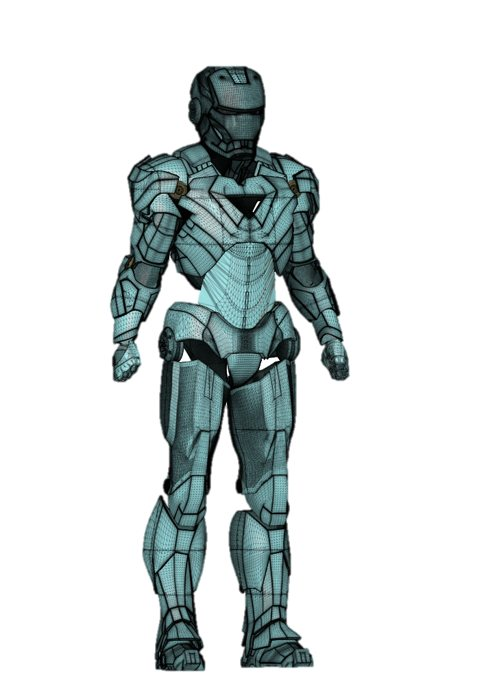
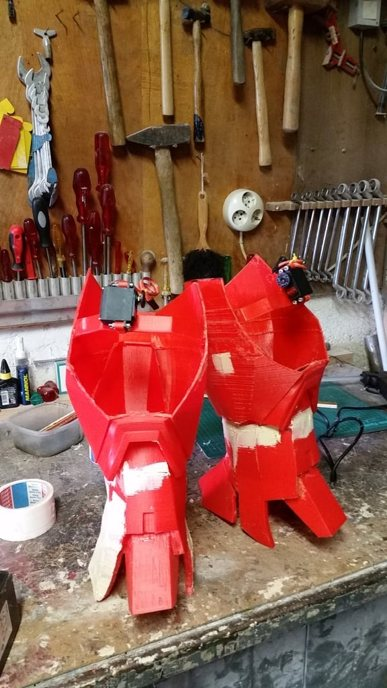
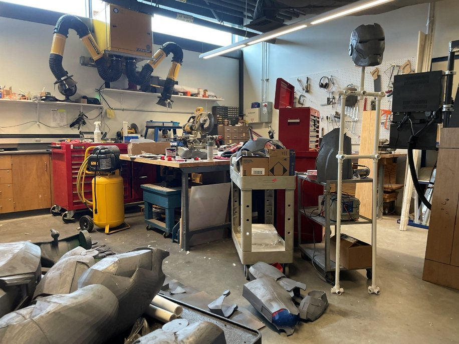
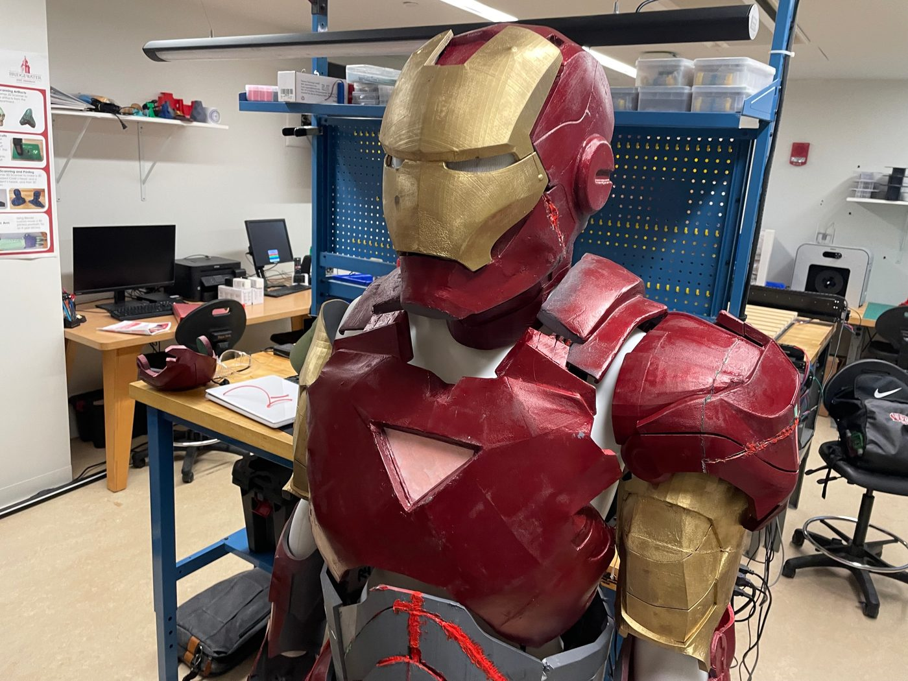
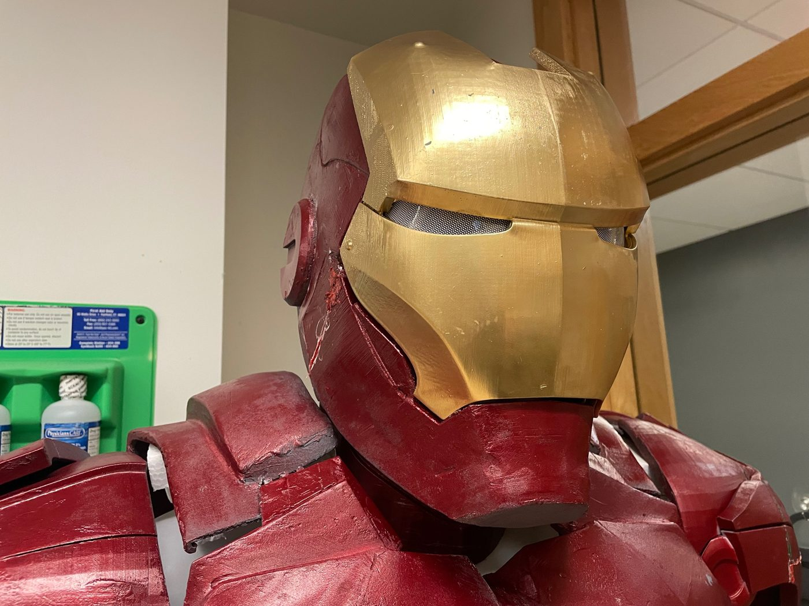
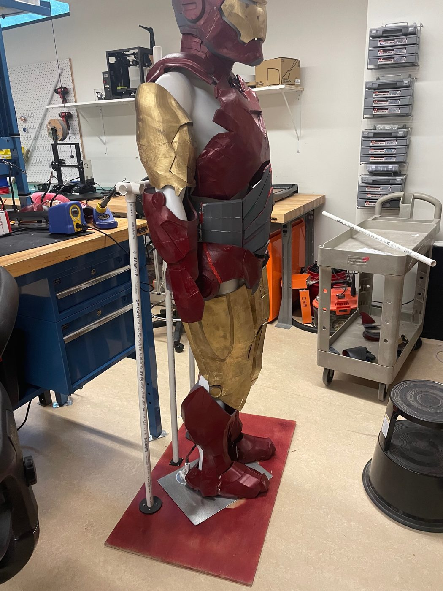
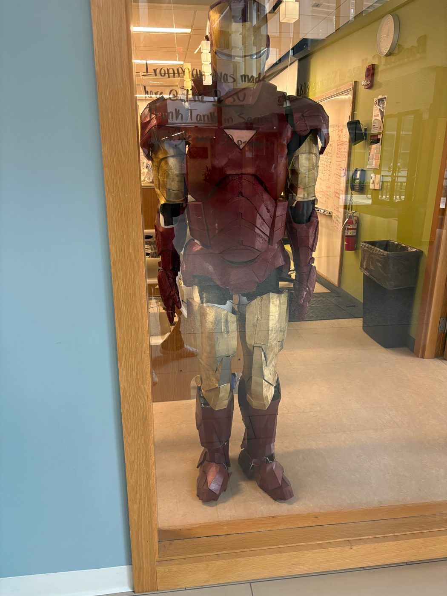
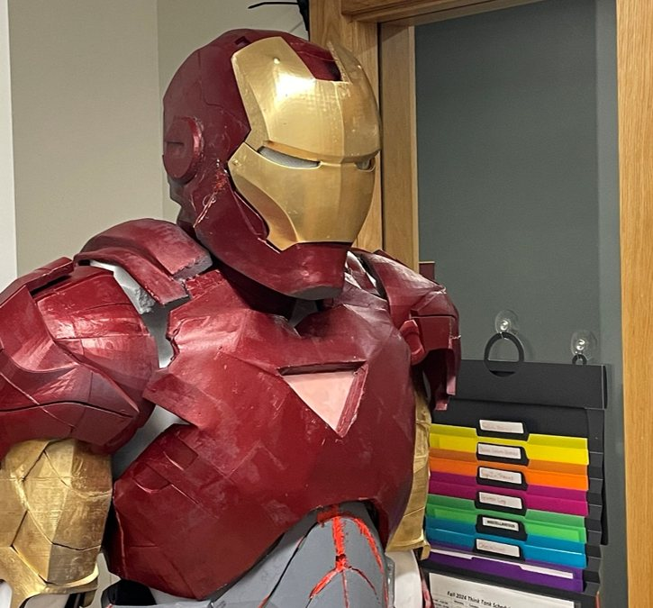

Project
3D Printed Iron Man Suit
A full Iron Man suit made of 186 individual parts, all 3D printed on the FDM printers in our campus makerspace, the BSU Think Tank. The parts are printed in PLA plastic and held together with soldering and Bondo. The project took 6 months to complete, covering printing, post processing, and assembly.
What the project involved
The suit was never one big print. It was 186 separate parts, each printed in PLA on the campus makerspace's FDM printers. That meant the project was mostly three jobs, done one after the other and overlapping for much of the 6 months.
Printing
Every one of the 186 parts had to come off a printer, and the makerspace's printers are shared with everyone else who uses the Think Tank. Getting all of the parts made meant keeping the printers busy and tracking which parts were done and which were still waiting.
Post processing
A part straight off the printer isn't ready to go into the suit. Post processing is the cleanup and finishing work done on each part afterward. In the photos you can see the result: the suit is finished in red and gold, and the layer lines from printing are still faintly visible on the gold helmet faceplate.
Assembly
The finished parts were held together with soldering and Bondo to form a full suit: helmet, chest, shoulders, arms, waist, legs, and boots, on a mannequin form. Getting it to stand took some trial and error. Our first attempt at propping it up used PVC pipe supports on a red plywood base, which you can see in the photos. After we moved to a bigger lab, we were able to hang it from the ceiling using high strength fishing wire instead.
My role
I was personally responsible for all of the printing and print scheduling, which meant deciding what got printed and when across the whole build. I also assisted with assembly and post processing, working with my team.
Where it was built
The suit was made at the BSU Think Tank, the campus makerspace where I work as Lab Supervisor. It is now on display at the Think Tank.
Build photos



Finished suit




